| #8C2E58 |
colorPrimary |
Actionbar |
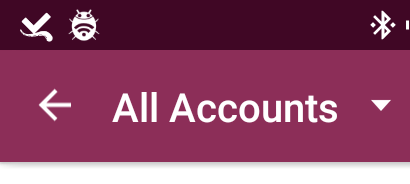 |
| #400725 |
colorPrimaryDark |
Android status bar |
| #FFFFFF |
colorTextActionBar |
|
| #FFFFFF |
colorTextActionBarHighlight |
|
| #144F59 |
colorAccent |
For buttons |
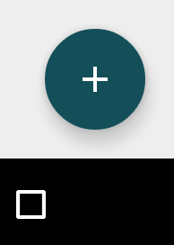 |
| #FAFAFA |
colorTaskCard |
Task background color |
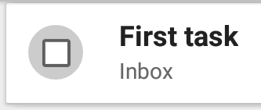 |
| #808080 |
colorTextGrey |
Color for subheaders in the task view.Also for all subtexts, icons, buttons in the TaskFragment |
| #000000 |
colorTextBlack |
Color for headers in the task view |
| #E4F0F9 |
colorSelectedRow |
|
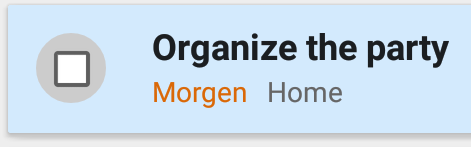 |
| #2196F3 |
colorCAB |
Color for actionbar when selecting stuff |
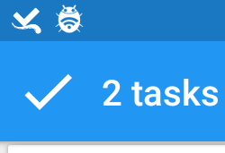 |
| #1A78C2 |
colorCABStatus |
For the status bar when CAB is active |
| #808080 |
colorLightGrey |
Color for text and icon in the menu sidebar |
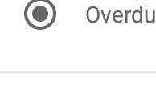 |
| #FFFFFF |
colorListsBackground |
Lists background |
| #FFFFFF |
colorTextWhite |
e.g. for the priority text |
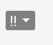 |
| #808080 |
colorPriorityBackground |
|
|
| #FFFFFF |
colorBackground |
Background for date/timepicker/dialogs/dropdown menus |
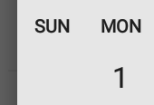 |
| colorPrimary(50% alpha) |
colorProgress |
Color for the progress indicator |
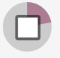 |
| #000000(20% alpha) |
colorProgressBackground |
background for progress indicator |
| #404040 |
colorProgressCheckmark |
Color for the checkmark on the progress indicator. |
| #D0021B |
colorDueOverdue |
|
 |
| #D0021B |
colorDueToday |
|
| #DA6807 |
colorDueNext |
|
| #166BA8 |
colorDueFuture |
| #e6e6e6 |
colorDivider |
the dividercolor in the task fragment and menu sidebar |
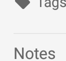 |
| #FAFAFA |
colorTaskFragmentBackground |
background for the task fragment |
| #FF444444 |
colorDarkGrey |
iconcolor in leave behind view |
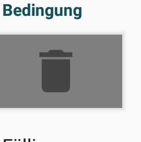 |
| #4D4D4D |
colorTextSettings |
The main text color for all settings main labels.Also for all texts on About and Donate and so on. |
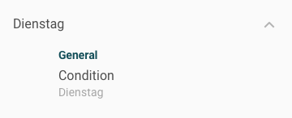 |
| #A6A6A6 |
colorTextSettingsGrey |
Color for subheaders in the settings. |
| #BFBFBF |
colorDropdownArrow |
Color for the dropdown arrow in the settings. |